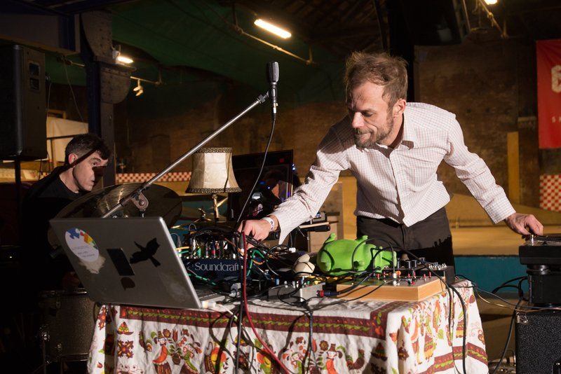

DETLET & ROB WORST
Vette murals, kunst en objecten
- Dag
- vrijdag
- Begin
- 15:00
- Einde
- 02:00
- Dag
- zaterdag
- Begin
- 18:00
- Einde
- 00:00
- Soort
- Expo
- Locatie
- Skatehal
- Plek
- Skate eiland
DETLET & ROB WORST
Antishit presenteert DETLET & ROB WORST. Tijdens Rauwkost zie je in het World Skate Center het ruige werk van de Bossche ontwerpers Detlet en illustrator Rob Worst uit Leiden.
Detlet (Sam Gulpen & Steven Janson) omschrijft zichzelf als "creative lab gericht op visuele communicatie”. Maak daar maar ruige communicatie van. Met roots in de BBOY en hip hop leveren ze aan de lopende band opvallende graphics. Ze zijn van vele markten thuis, want begin 2019 brachten ze zelfs een mixtape uit. Detlet heeft de midas-touch, altijd bijgestaan door studio dog Wolf.
Voor Rauwkost maakt Detlet 3 levensgrote skatedecks met graphics geïnspireerd door de old school ontwerpen uit de jaren 80. Verwacht een clash van klassieke Vision en Dog Town graphics!
Illustrator Rob Worst vlamt zijn vette illustraties op muren of panelen, kranten of magazines. Het maakt hem eigenlijk niet uit wat het platform is, zijn gelaagde en trippie werk knalt je netvlies op. Het is herkenbaar en de invloed van comics en psychedelica is nadrukkelijk aanwezig. Duik in zijn kleurrijke werk en ga op een dikke, visuele trip!
Voor Rauwkost maakt Rob Worst een mural in het World Skate Center. Daarnaast is veel van zijn werk te zien en te koop. Nu maar hopen dat hij zijn klassieker “Fuckapult” meeneemt!
Antishit is een cross-over community, een samenwerking van gelijkgezinden die muziek, kunst en sport samenbrengt en presenteert aan een breder publiek.
 Skatehal
Skatehal

Cafépodium Vert Skate eiland
In deze monumentale fabriek werden vroeger scheepsschroeven gegoten van ijzer uit een hete smeltkroes. Tegenwoordig is deze plek een ware smeltkroes van urban arts en sports.

“Voor zij die daar warm van worden, creëren we een smeltkroes van Skaten, boarden, BMX, graffiti, hiphop, punk, garagerock, klimmen en freerunnen. Om af te koelen kun je er ook terecht voor de coolste indie bands”


Skate eiland
Speciaal voor RAUWKOST wordt het skate eiland omgetoverd tot een 360 graden podium met surround geluid en het publiek eromheen in een kring!
In het midden spelen zowel vrijdag als zaterdag de meest freaky acts van het festival. Je zit er dus met je neus bovenop.
Waar dan?